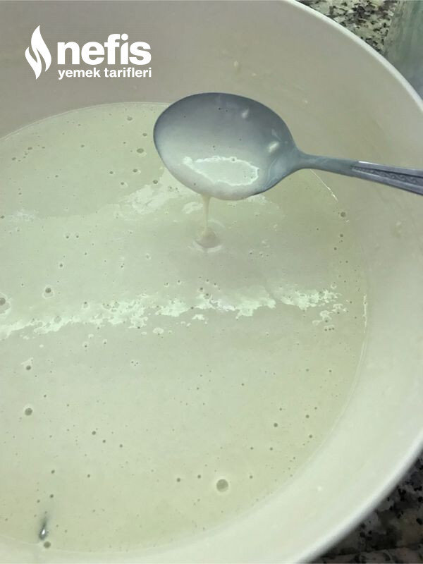

🍽️ 8-10 kişilik⏱️ Hazırlık: 15 dk🔥 Pişirme: 1 sa 30 dk🏷️ Hamur İşi Tarifleri🏷️ Börek Tarifleri
Malzemeler
- 6 su bardak un
- 7 su bardak su
- 2 yemek kaşık silme tuz
- 1 kg kadar yoğurt
- Yarım su bardağı zeytinyağı
- Tuz
Hazırlanışı
- Önce hamurunu hazırlıyoruz.Un, tuz ve su ile krep hamuru kıvamında homojen bir hamur hazırlıyoruz. ( krep hamurundan bir tık ince olursa daha iyi olur).
- Yoğurt, sıvı yağ ( istenirse kaymak, tereyağı da eklenir) ve tuz ile aralara sürmek için yoğurtlu malzeme de hazırlanır.
- Tepsi yağlanır.
- Dikdörtgen fırın tepsisi kullandım ben.Kaşık ile arada bir kaşıklık boşluk olacak şekilde tepsiye ilk hamurları koyarak pişiriyoruz.
- Fırından çıkararak boş kalan yerlere ikinci sıra hamur konulacak.
- İkinci sıra da pişince üzerine yağlı yoğurt sürüyoruz.
- Sonra her sıraya yağlı yoğurt sürüp bir önceki sıraya kaşıkla hamuru döküyoruz.
- Bütün malzemeler bitince üzerine yağlı, yoğurtlu malzeme sürülüp 3-5 dakika alt- üst ayarda pişiriyoruz.
- 8-10 dakika dinlendirip pekmez veya balla veya istediğimiz şekilde tüketiyoruz. Oldukça zahmetli olsa da değiyor.Afiyet olsun 😊